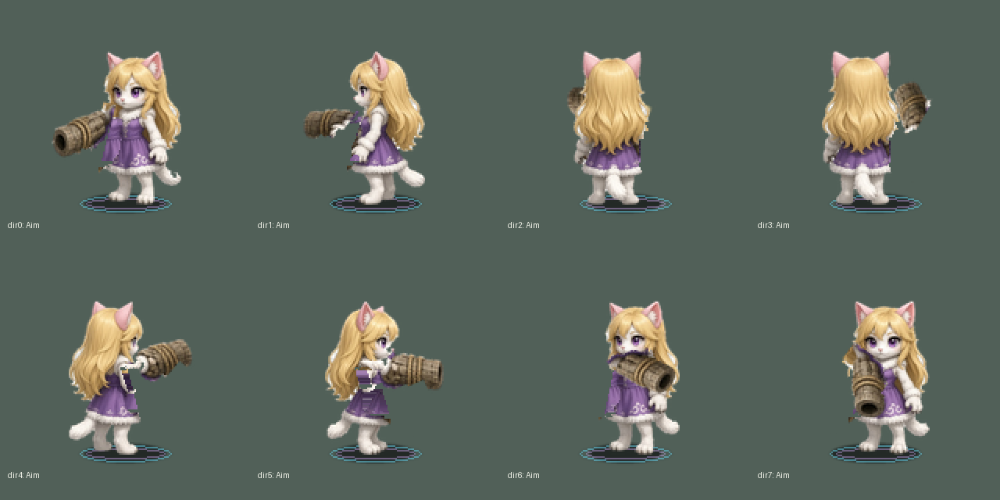
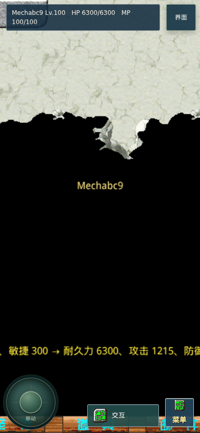

以下证据绑定同一静态 Linux AMD64 二进制。使用真实 Chromium、原生界面与授权 GM 命令驱动业务；移动部分为触屏与视口模拟。生产实例没有停服或部署。
六项任务与验证依据
| 完成项 | 最终行为与风险处理 | 实际证据 |
|---|---|---|
| ✓导航与精确坐标 | 快速战斗暂停路线，战后重算并续行；小地图可输入 X/Y。普通战斗、换层与手动方向仍取消路线。避免战斗中非法移动、入口点击穿透及残留输入框。 | 桌面与移动各 6 场真实快速战斗后抵达；两端战斗期 Move 均为 0。 查看证据 |
| ✓按比例恢复 | HP／MP 共用恢复比例；肉优先，再药物，最后恢复精灵。没有恢复装备也会按 MP 比例补气。按原生使用函数区分恢复资源；自用物品不会错误投向队友。 | 两端分别验证自动／快速战斗吃肉优先及无装备补气；边界由业务测试覆盖。 查看证据 |
| ✓自动逃跑 | 新增默认关闭开关；开启时优先逃跑，同场实际失败三次后恢复战斗策略。不把轮询或异常阻止行动算作失败；不突破任务／头目／决斗限制。 | 真实战斗验证优先逃跑；三次失败及新场重置由确定性业务测试证明。 查看证据 |
| ✓关键词自动丢弃 | 自动遇敌下方新增默认关闭开关；以 | 分隔，名字字面包含即可整叠丢弃。关闭隐藏输入框。忽略空段，排除装备和占用物品；前台编辑时暂停执行。 | 双端验证默认值、保存、隐藏、编辑暂停、日常丢弃和关闭后保留；战后入口有业务测试。 查看证据 |
| ✓多人／人宠合击 | 相邻行动、同阵营、同目标的普通近战攻击概率合击；玩家／宠物 50%，怪物 20%。独立 coattack 协议，保留同人 combo；同时动画仍按服务端顺序落 HP。 | 固定原作源码与玩家讨论交叉印证；两端真实玩家＋宠物普通攻击同时接近，边界测试覆盖反射／骑乘／死亡。 查看证据 |
| ✓雷萨利朵举炮 | 右炮臂以肩关节抬起瞄准，炮焰跟随炮口；保留图号、影子、漂浮与其他动作。清除旧炮底残条；五文件 v3 补丁先校验安装再清理已识别旧版。 | 双端普通攻击出击／回位与 HAND 原地五炮通过，八向艺术检查与 42 项安装测试通过。 查看证据 |
把动作与落点放回游戏里检查





验证记录
244 / 244客户端与构建工具测试
29 / 29最终程序浏览器检查
57 / 57HTTP 文件逐字节匹配
42 / 42素材安装与升级检查
完整 Go 测试、race、vet、TypeScript 与 5 项艺术测试通过；重复构建 SHA-256 一致。三组私有实例均正常 SIGTERM 退出，SQLite 保存位置与退出前一致。
- ✓导航desktop actual minimap pointer navigation
- ✓导航desktop exact coordinate navigation, quick encounter resume, normal combat stop
- ✓导航mobile exact coordinate navigation, quick encounter resume, normal combat stop
- ✓战斗策略与合击desktop settings defaults, native input, persistence and hide
- ✓战斗策略与合击desktop daily literal keyword discard without confirmation
- ✓战斗策略与合击desktop disabled discard retains matching item
- ✓战斗策略与合击desktop auto meat before medicine
- ✓战斗策略与合击desktop auto MP threshold without healing equipment
- ✓战斗策略与合击desktop auto automatic escape
- ✓战斗策略与合击desktop quick meat before medicine
- ✓战斗策略与合击desktop quick MP threshold without healing equipment
- ✓战斗策略与合击desktop quick automatic escape
- ✓战斗策略与合击desktop native player and pet coattack with simultaneous approach
- ✓战斗策略与合击mobile settings defaults, native input, persistence and hide
- ✓战斗策略与合击mobile daily literal keyword discard without confirmation
- ✓战斗策略与合击mobile disabled discard retains matching item
- ✓战斗策略与合击mobile auto meat before medicine
- ✓战斗策略与合击mobile auto MP threshold without healing equipment
- ✓战斗策略与合击mobile auto automatic escape
- ✓战斗策略与合击mobile quick meat before medicine
- ✓战斗策略与合击mobile quick MP threshold without healing equipment
- ✓战斗策略与合击mobile quick automatic escape
- ✓战斗策略与合击mobile native player and pet coattack with simultaneous approach
- ✓雷萨利朵desktop native Lisarido pet list and unmodified stats/skills
- ✓雷萨利朵desktop Lisarido normal attack floats and renders native right-cannon close explosion
- ✓雷萨利朵desktop right arm raises and fires HAND from home, with original electrical FX
- ✓雷萨利朵mobile native Lisarido pet list and unmodified stats/skills
- ✓雷萨利朵mobile Lisarido normal attack floats and renders native right-cannon close explosion
- ✓雷萨利朵mobile right arm raises and fires HAND from home, with original electrical FX
唯一最终发行
程序 · 16,674,976 字节 · 静态 Linux AMD64
c9118a90071366a2aedf38ef28cda70faa2e122792811a81d1be0caeb96aa8f48349b51112aee7657962230fcb2c1d980bb53393dbd9e67510479868daf2ecf6420b024dddea2d6c9f0dd8f530cb19dd9e2f64c0394df639d6ef24bf8c798750验证范围与限制
- Chromium 156 的桌面和触屏／横竖视口模拟已验；没有实体 Android、iOS 或 Safari 认证。
- 合击数值来自固定提交的公开原作 C 代码变体，并以玩家讨论交叉印证；未取得可读取的同期官方公式，不宣称覆盖全部运营时期。
- 真实普通攻击的人宠合击已观测；极高防御、反射、骑乘、保护目标、死亡及三次逃跑失败由确定性业务测试覆盖。
- 本轮没有重做雷萨利朵相簿故事内容验收。旧相簿翻页脚本失败已保留；最终艺术流程收窄到原生宠物部署、攻击、五炮、回位与移动视口。
- 自动丢弃无需确认，开启前核对关键字。Assets 原树、数据库、凭据、会话资料不进入交付仓库。